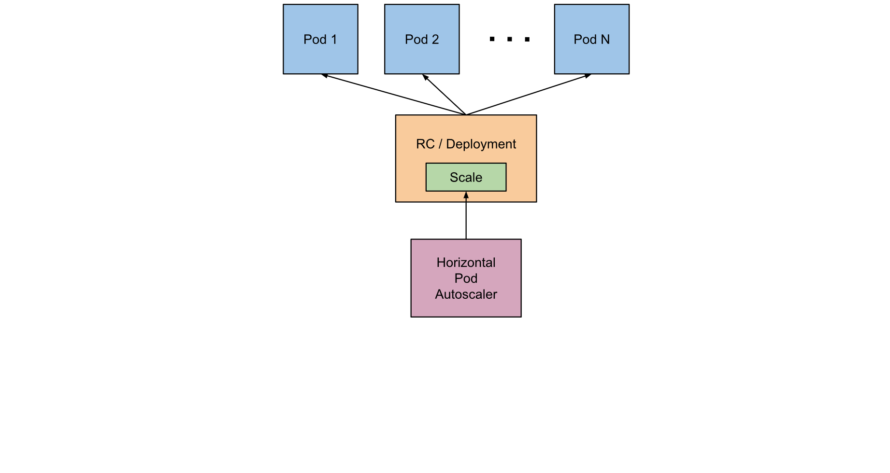

This document describes the abilities and work of integration between Horizontal Pod Autoscaling and Prometheus.
Overview¶
This section describes what is a HorizontalPodAutoscaler and provides generic details about its working.
What is HorizontalPodAutoscaler?¶
In Kubernetes, a HorizontalPodAutoscaler (HPA) automatically updates a workload resource (such as Deployment
or StatefulSet) with the aim of automatically scaling the workload to match demand.
Horizontal scaling specifies that the response to increased load is to deploy more pods. This is different from vertical
scaling, which for Kubernetes means assigning more resources (for example, memory or CPU) to the pods that
are already running for the workload.
If the load decreases, and the number of pods is above the configured minimum, the HorizontalPodAutoscaler instructs
the workload resource (Deployment, StatefulSet, or other similar resource) to scale back down.
Horizontal pod autoscaling does not apply to objects that cannot be scaled (for example, a DaemonSet).
The HorizontalPodAutoscaler is implemented as a Kubernetes API resource and a controller. The resource determines
the behavior of the controller. The horizontal pod autoscaling controller, running within the Kubernetes control plane,
periodically adjusts the desired scale of its target (for example, a Deployment) to match observed metrics such as
the average CPU utilization, average memory utilization, or any other custom metric specified.
How does a HorizontalPodAutoscaler Work?¶

HorizontalPodAutoscaler controls the scale of a deployment and its ReplicaSet.
Kubernetes implements horizontal pod autoscaling as a control loop that runs intermittently
(it is not a continuous process). The interval is set by the --horizontal-pod-autoscaler-sync-period parameter
to the kube-controller-manager and the default interval is 15 seconds. For more information, see https://kubernetes.io/docs/reference/command-line-tools-reference/kube-controller-manager/.
Once during each period, the controller manager queries the resource utilization against the metrics specified in each
HorizontalPodAutoscaler (HPA) definition. The controller manager finds the target resource defined by the scaleTargetRef,
then selects the pods based on the target resource's .spec.selector labels, and obtains the metrics from either
the resource metrics API (for per-pod resource metrics), or the custom metrics API (for all other metrics).
- For per-pod resource metrics (like CPU), the controller fetches the metrics from the resource metrics API for each pod
targeted by the
HorizontalPodAutoscaler. If a target utilization value is set, the controller calculates the utilization value as a percentage of the equivalent resource request on the containers in each pod. For more information, see https://kubernetes.io/docs/concepts/configuration/manage-resources-containers/#requests-and-limits.
If a target raw value is set, the raw metric values are used directly. The controller then takes the mean of the utilization or the raw value (depending on the type of target specified) across all targeted pods, and produces a ratio used to scale the number of desired replicas.
Note that if some of the pod's containers do not have the relevant resource request set, CPU utilization for the pod will not be defined and the autoscaler will not take any action for that metric. Refer to the algorithm details section in the official documentation at https://kubernetes.io/docs/tasks/run-application/horizontal-pod-autoscale/#algorithm-details for more information about how the autoscaling algorithm works.
-
For per-pod custom metrics, the controller functions similarly to per-pod resource metrics, except that it works with raw values, not utilization values.
-
For object metrics and external metrics, a single metric is fetched, which describes the object in question. This metric is compared to the target value, to produce a ratio as above. In the
autoscaling/v2API version, this value can optionally be divided by the number of pods before the comparison is made.
The common use for HorizontalPodAutoscaler is to configure it to fetch metrics from aggregated APIs
(metrics.k8s.io, custom.metrics.k8s.io, or external.metrics.k8s.io). The metrics.k8s.io API is usually
provided by an add-on named Metrics Server, which needs to be launched separately. For more information about
resource metrics, see
https://kubernetes.io/docs/tasks/debug/debug-cluster/resource-metrics-pipeline/#metrics-server.
For explanation about the stability guarantees and support status for these different APIs, see https://kubernetes.io/docs/tasks/run-application/horizontal-pod-autoscale/#support-for-metrics-apis.
The HorizontalPodAutoscaler controller accesses the corresponding workload resources that support scaling (such as Deployments and StatefulSet). These resources each have a subresource named scale, an interface that allows you to dynamically set the number of replicas and examine each of their current states. For general information about subresources in the Kubernetes API, see https://kubernetes.io/docs/reference/using-api/api-concepts/.
Support for Resource Metrics¶
Any HPA target can be scaled based on the resource usage of the pods in the scaling target.
When defining the pod specification, the resource requests like CPU and memory should be specified.
This is used to determine the resource utilization and used by the HPA controller to scale the target up or down.
To use resource utilization based scaling, specify a metric source like the following:
With this metric, the HPA controller keeps the average utilization of the pods in the scaling target at 60%. Utilization is the ratio between the current usage of resource to the requested resources of the pod. For more information about how the utilization is calculated and averaged, see https://kubernetes.io/docs/tasks/run-application/horizontal-pod-autoscale/#algorithm-details.
Note: Since the resource usages of all the containers are summed up, the total pod utilization
may not accurately represent the individual container resource usage. This could lead to situations
where a single container might be running with high usage and the HPA does not scale out
because the overall pod usage is still within acceptable limits.
Container Resource Metrics¶
FEATURE STATE: Kubernetes v1.20 [alpha]
The HorizontalPodAutoscaler API also supports a container metric source where the HPA can track the resource usage
of individual containers across a set of pods to scale the target resource.
This lets you configure scaling thresholds for the containers that matter most in a particular pod.
For example, if you have a web application and a logging sidecar, you can scale based on the resource use
of the web application, ignoring the sidecar container and its resource use.
If you revise the target resource to have a new pod specification with a different set of containers,
you should revise the HPA spec if that newly added container should also be used for scaling.
If the specified container in the metric source is not present or only present in a subset of the pods,
then those pods are ignored and the recommendation is recalculated. For more information about the calculation, see
https://kubernetes.io/docs/tasks/run-application/horizontal-pod-autoscale/#algorithm-details.
To use container resources for autoscaling, define a metric source as follows:
type: ContainerResource
containerResource:
name: cpu
container: application
target:
type: Utilization
averageUtilization: 60
In the above example, the HPA controller scales the target such that the average utilization of the CPU
in the application container of all the pods is 60%.
Note: If you change the name of a container that a HorizontalPodAutoscaler is tracking, you can make
that change in a specific order to ensure scaling remains available and effective while the change is being applied.
Before you update the resource that defines the container (such as a Deployment), you should update the associated
HPA to track both the new and old container names. This way, the HPA is able to calculate a scaling recommendation
throughout the update process.
Once you have rolled out the container name change to the workload resource, tidy up by removing the old container name
from the HPA specification.
Scaling on Custom Metrics¶
FEATURE STATE: Kubernetes v1.23 [stable]
(The autoscaling/v2beta2 API version previously provided this ability as a beta feature)
Provided that you use the autoscaling/v2 API version, you can configure a HorizontalPodAutoscaler to scale based on a custom metric (that is not built in to Kubernetes or any Kubernetes component). The HorizontalPodAutoscaler controller then queries for these custom metrics from the Kubernetes API.
For information about the requirements, see https://kubernetes.io/docs/tasks/run-application/horizontal-pod-autoscale/#support-for-metrics-apis.
Adapter to Support Custom Metrics in Monitoring¶
A special adapter is provided to support scaling by custom metrics by using HorizontalPodAutoscaler in Monitoring.
This adapter is called prometheus-adapter and it was developed by a community.
The adapter implements the Metric API and allows to use HorizontalPodAutoscaler for scale pods replicas by custom
metrics collected by Prometheus (or any other Monitoring supported PromQL). For more information, see
https://kubernetes.io/docs/tasks/debug/debug-cluster/resource-metrics-pipeline/.
Manage Prometheus-adapter for Scale by Custom Metrics¶
This section describes how to manage (install, remove, maintain) prometheus-adapter.
Before You Begin¶
Before deploying prometheus-adapter, note the following points:
Prometheus-adapterrequires cluster permissions because it registers as a handler for KubernetesMetrics API.Prometheus-adapterpod MUST always work to handle all requests from Kubernetes after the deployment. If theprometheus-adapteris unavailable and cannot handle API requests, it affects some API calls to Kubernetes. For more information, refer to the Prometheus Adapter section in the Monitoring Operator Troubleshooting chapter.
Prometheus Adapter and How it can Affect Kubernetes¶
The prometheus-adapter is installed for the whole Kubernetes cluster. There are some points to remember
regarding its support. The following section describes some possible issues that can occur during prometheus-operator
operations.
Problems with Kubernetes API Server when Adapter is Unavailable¶
The prometheus-adapter implements the Kubernetes Metrics API. To handle requests from this API, it must
register as a handler in the Kubernetes API server.
This means that prometheus-adapter handles all requests from the whole Kubernetes cluster.
Accordingly, problems with it can affect all Kubernetes clusters. So it is extremely important that
prometheus-adapter always works and it is better to run it in two replicas.
Fortunately, only one global problem is known currently. It is that namespaces cannot be removed in Kubernetes
if prometheus-adapter is not available. Also, some errors in Kubernetes PI server logs can be seen.
Kubernetes does not allow to remove objects (like namespace) that have the kubernetes finalizer. For example:
apiVersion: v1
kind: Namespace
metadata:
name: monitoring
spec:
finalizers:
- kubernetes # finalizer which not allow to remove namespace
status:
phase: Active
Other Kubernetes features are not affected.
To fix this issue, refer to the Prometheus Adapter section in the Monitoring Operator Troubleshooting chapter.
In-built HPA Adapter Does Not Work¶
When prometheus-adapter is installed in the Kubernetes cluster, it replaces the in-build HPA adapter, which allows
scaling by CPU and memory metrics. So with a third-party, prometheus-adapter deployment scaling works only by
custom metrics.
But to avoid this issue and keep the ability to scale by CPU and memory metrics out of the box, a default configuration is added that exposes some container metrics by default.
The default configuration is specified in two places:
- In ConfigMap which stores aggregated configuration for
prometheus-adapter - As
CustomScaleMetricRuleCR
Note: During the first installation configuration, it is recommended to write in both places
because with an empty configuration file, prometheus-adapter cannot start. So to avoid restarts,
the configuration is added in CustomScaleMetricRule CR and ConfigMap.
The default CustomScaleMetricRule CR contains the following configuration:
apiVersion: monitoring.qubership.org/v1alpha1
kind: CustomScaleMetricRule
metadata:
name: kubelet-custom-metric-rule
labels:
app.kubernetes.io/component: monitoring
spec:
rules:
- seriesQuery: '{__name__=~"^container_.*",container!="POD",namespace!="",pod!=""}'
seriesFilters: [ ]
name:
matches: ^container_(.*)_seconds_total$
as: ""
resources:
overrides:
namespace:
resource: "namespace"
pod:
resource: "pod"
metricsQuery: sum(rate(<<.Series>>{<<.LabelMatchers>>,container!="POD"}[5m])) by (<<.GroupBy>>)
Warning: Pay attention that prometheus-adapter always should not have an empty configuration.
So if you have other CustomScaleMetricRule CRs in the cloud, do not remove this default CR or add any other CR
with the configuration before removing it.
Installing Prometheus Adapter for Enabling HPA by Custom Metrics¶
To install the Prometheus adapter, use the following parameters (minimal parameters set):
prometheusAdapter:
install: true
securityContext:
runAsUser: 2000
fsGroup: 2000
resources:
requests:
cpu: 500m
memory: 1Gi
limits:
cpu: 1000m
memory: 2Gi
operator:
securityContext:
runAsUser: 2000
fsGroup: 2000
resources:
requests:
cpu: 100m
memory: 100Mi
limits:
cpu: 200m
memory: 200Mi
All necessary configurations, Service Accounts, Roles, and so on, are created during the deployment.
Deploy execution uses Helm charts and operator.
First, the Helm chart executes the deployment of prometheus-adapter-operator and other configurations for it
(like Roles or Custom Resources).
Then the operator deploys prometheus-adapter, all the necessary objects for its working, and configures it.
Uninstalling Prometheus Adapter¶
To uninstall prometheus-adapter, the following options are available. However, some manual steps are also required.
The two options to remove prometheus-adapter are:
- Keep
prometheus-adapter-operatorand remove the object with kind PrometheusAdapter. - Delete all components using Helm and
helm uninstallcommand.
Removing the Object with Kind Prometheus Adapter¶
This method allows you to keep the operator which can recreate prometheus-adapter without any redeployments.
To find the PrometheusAdapter Custom Resource (CR), use the following command:
You can print it to backup using the command:
kubectl get -n <monitoring_namespace> prometheusadapters.monitoring.qubership.org <object_name> -o yaml
Also, to register prometheus-adapter during the deployment, create an APIService object. To find already created
APIService objects, use the following command:
Note: You can use this command to check the status of the API handler. For example, the following output shows that APIs for handling autoscaling are now available and the Kubernetes API Server is operating:
❯ kubectl get apiservices
NAME SERVICE AVAILABLE AGE
...
v1.autoscaling Local True 650d
...
v2beta1.autoscaling Local True 650d
v2beta2.autoscaling Local True 650d
...
v1beta1.custom.metrics.k8s.io monitoring/prometheus-adapter True 19m
And the following command helps you to see the details:
To remove prometheus-adapter:
- Manually remove the registered
APIService. - Remove
PrometheusAdapterCR.
Execute the following commands to find the registered APIService and remove it:
Execute the following commands to find and remove the PrometheusAdapter CR:
kubectl get -n <monitoring_namespace> prometheusadapters.monitoring.qubership.org
kubectl delete -n <monitoring_namespace> prometheusadapters.monitoring.qubership.org <object_name>
To check that the Kubernetes API Server works fine after removing prometheus-adapter, use the following command:
All services in the AVAILABLE column must display True.
Removing all Components using Helm¶
This method allows you to remove all the parts of prometheus-adapter, except the registered APIService.
To remove the prometheus-adapter:
- Manually remove the registered
APIService. - Remove the Helm chart.
Execute the following commands to find the registered APIService and remove it:
Execute the following commands to find and remove the prometheus-adapter Helm chart:
Using prometheus-adapter¶
This section describes how to use prometheus-adapter including the following topics:
- How to expose custom metrics in the Kubernetes Metrics API to use them further?
- How to write the
HorizontalPodAutoscalerconfiguration to use custom metrics?
Declaring New Custom Metrics for Scale¶
The prometheus-adapter allows exposing custom metrics in the Kubernetes Metrics API and use them for scaling.
But by default, it does not automatically expose these metrics.
There are two reasons why the prometheus-adapter does not expose all metrics from Prometheus:
- Prometheus can collect a lot of metrics (thousands and even hundreds of thousands of metrics), and exposing all metrics can be very expensive for hardware resources.
- It makes no sense to expose all metrics for scaling since nobody uses all the metrics.
To expose custom metrics, specify the metrics in the prometheus-adapter configuration. Vanilla third-party
image of prometheus-adapter allows to specify the list of metrics to expose only in the configuration file.
But it is not convenient in the case of using Kubernetes with a lot of metrics sources.
So a special Custom Resource (CR) is added with the name CustomScaleMetricRule, which allows specifying a part
of the configuration. Thus, the service can expose the metrics and declare which of these metrics can be used to
scale by them.
The prometheus-adapter-operator discovers all CRs, collects them, and merges all the parts into one big configuration.
To declare the metrics in the Kubernetes Metrics API, create the CustomScaleMetricRule CR.
For example:
apiVersion: monitoring.qubership.org/v1alpha1
kind: CustomScaleMetricRule
metadata:
name: test-service-custom-metric-rule
labels:
app.kubernetes.io/component: monitoring # mandatory label, use during filter all resources
spec:
rules:
- seriesQuery: '{__name__=~"prometheus_example_app_load",namespace!="",pod!=""}'
name:
matches: "prometheus_example_app_load"
resources:
overrides:
namespace:
resource: "namespace"
pod:
resource: "pod"
metricsQuery: '<<.Series>>{<<.LabelMatchers>>}'
How to Read and Write prometheus-adapter Configurations?¶
The adapter determines which metrics are to be exposed, and how to expose them, through a set of "discovery" rules. Each rule is executed independently (so make sure that your rules are mutually exclusive) and specifies each of the steps the adapter needs to take to expose a metric in the API.
Each rule can be broken down into roughly four parts:
- Discovery, which specifies how the adapter should find all Prometheus metrics for this rule.
- Association, which specifies how the adapter should determine which Kubernetes resources a particular metric is associated with.
- Naming, which specifies how the adapter should expose the metric in the custom metrics API.
- Querying, which specifies how a request for a particular metric on one or more Kubernetes objects should be turned into a query to Prometheus.
rules:
# this rule matches cumulative cAdvisor metrics measured in seconds
- seriesQuery: '{__name__=~"^container_.*",container!="POD",namespace!="",pod!=""}'
resources:
# skip specifying generic resource<->label mappings, and just
# attach only pod and namespace resources by mapping label names to group-resources
overrides:
namespace:
resource: "namespace"
pod:
resource: "pod"
# specify that the `container_` and `_seconds_total` suffixes should be removed.
# this also introduces an implicit filter on metric family names
name:
# we use the value of the capture group implicitly as the API name
# we could also explicitly write `as: "$1"`
matches: "^container_(.*)_seconds_total$"
# specify how to construct a query to fetch samples for a given series
# This is a Go template where the `.Series` and `.LabelMatchers` string values
# are available, and the delimiters are `<<` and `>>` to avoid conflicts with
# the prometheus query language
metricsQuery: "sum(rate(<<.Series>>{<<.LabelMatchers>>,container!="POD"}[2m])) by (<<.GroupBy>>)"
Discovery¶
Discovery governs the process of finding the metrics that you want to expose in the custom metrics API.
There are two fields that factor into discovery: seriesQuery and seriesFilters.
seriesQuery specifies a Prometheus series query (as passed to the /api/v1/series endpoint in Prometheus)
that is used to find a set of a Prometheus series. The adapter strips the label values from this series,
and then uses the resulting metric-name-label-names combinations later on.
In many cases, seriesQuery is sufficient to narrow down the list of Prometheus series.
However, sometimes (especially if two rules might otherwise overlap), it is useful to do additional filtering on metric
names. In this case, seriesFilters can be used. After the list of series is returned from seriesQuery,
each series has its metric name filtered through any specified filters.
Filters may be either:
is: <regex>, which matches any series whose name matches with the specified regex.isNot: <regex>, which matches any series whose name does not match with the specified regex.
For example:
# match all cAdvisor metrics that aren't measured in seconds
seriesQuery: '{__name__=~"^container_.*_total",container!="POD",namespace!="",pod!=""}'
seriesFilters:
- isNot: "^container_.*_seconds_total"
Association¶
Association governs the process of figuring out which Kubernetes resources a particular metric could be attached to.
The resources field controls this process.
There are two ways to associate resources with a particular metric. In both cases, the value of the label becomes the name of the particular object.
One way is to specify that any label name that matches some particular pattern refers to some group-resource based
on the label name. This can be done using the template field. The pattern is specified as a Go template,
with the Group and Resource fields representing the group and resource. You do not necessarily have to use
the Group field (in which case the group is guessed by the system). For instance:
# any label `kube_<group>_<resource>` becomes <group>.<resource> in Kubernetes
resources:
template: "kube_<<.Group>>_<<.Resource>>"
The other way is to specify that some particular label represents some particular Kubernetes resource.
This can be done using the overrides field. Each override maps a Prometheus label to a Kubernetes
group-resource. For instance:
# the microservice label corresponds to the apps.deployment resource
resources:
overrides:
microservice: {group: "apps", resource: "deployment"}
These two can be combined, so you can specify both a template and some individual overrides.
The resources mentioned can be any resource available in your Kubernetes cluster, as long as you have got a corresponding label.
Naming¶
Naming governs the process of converting a Prometheus metric name into a metric in the custom metrics API,
and vice versa. It is controlled by the name field.
Naming is controlled by specifying a pattern to extract an API name from a Prometheus name, and potentially a transformation on that extracted value.
The pattern is specified in the matches field and is just a regular expression.
If not specified, it defaults to .*.
The transformation is specified by the as field. You can use any capture groups defined in the matches field.
If the matches field does not contain capture groups, the as field defaults to $0.
If it contains a single capture group, the as field defaults to $1.
Otherwise, it is an error not to specify the as field.
For example:
# match turn any name <name>_total to <name>_per_second
# e.g. http_requests_total becomes http_requests_per_second
name:
matches: "^(.*)_total$"
as: "${1}_per_second"
Querying¶
Querying governs the process of actually fetching values for a particular metric.
It is controlled by the metricsQuery field.
The metricsQuery field is a Go template that gets turned into a Prometheus query using input from a particular
call to the custom metrics API. A given call to the custom metrics API is distilled down to a metric name,
a group-resource, and one or more objects of that group-resource. These get turned into the following fields in the
template:
Series- The metric name.LabelMatchers- A comma-separated list of label matchers matching the given objects. Currently, this is the label for the particular group-resource, plus the label for namespace, if the group-resource is namespaced.GroupBy- A comma-separated list of labels to group by. Currently, this contains the group-resource label used inLabelMatchers.
For instance, suppose we had a series http_requests_total (exposed as http_requests_per_second in the API)
with labels service, pod, ingress, namespace, and verb. The first four correspond to Kubernetes resources.
Then, if someone requested the metric pods/http_request_per_second for pods pod1 and pod2 in the
somens namespace, we have the following:
Series: "http_requests_total"LabelMatchers: "pod=~\"pod1|pod2",namespace="somens"GroupBy:pod
Additionally, there are two advanced fields that are "raw" forms of other fields:
LabelValuesByName- A map mapping the labels and values from theLabelMatchersfield. The values are pre-joined by|(for using with the=~matcher in Prometheus).GroupBySlice- The slice form ofGroupBy.
In general, the Series, LabelMatchers, and GroupBy fields are used.
The other two are for advanced usage.
The query is expected to return one value for each object requested. The adapter uses the labels on the returned series to associate a given series back to its corresponding object.
For example:
# convert cumulative cAdvisor metrics into rates calculated over 2 minutes
metricsQuery: "sum(rate(<<.Series>>{<<.LabelMatchers>>,container!="POD"}[2m])) by (<<.GroupBy>>)"
How to Check whether Metrics are Exposed in Metrics API?¶
You can see the metrics showing up as associated with the resources you expect at
/apis/custom.metrics.k8s.io/v1beta1/.
Use the following command:
You can check, and pipe to jq to pretty-print the results, if you have it installed.
If not, make sure your series are labeled correctly. Consumers of the custom metrics API (especially the HPA) do not do any special logic to associate a particular resource to a particular series, so you have to make sure that the adapter does it instead.
If your series already has correct namespace labels, you can use a request which returns metrics only for the specified namespace:
For example:
Or you can even get values for the specific metric in the namespace:
Writing HorizontalPodAutoscaler for Scale by Custom Metrics¶
To run autoscaling by custom metrics, create HorizontalPodAutoscaler.
For example:
apiVersion: autoscaling/v2beta1
kind: HorizontalPodAutoscaler
metadata:
name: test-service-autoscaler
namespace: monitoring
spec:
scaleTargetRef:
# point the HPA at the sample application which you will deploy
apiVersion: apps/v1
kind: Deployment
name: test-service
# autoscale between 1 and 3 replicas
minReplicas: 1
maxReplicas: 3
# use a "Pods" metric, which takes the average of the
# given metric across all pods controlled by the autoscaling target
metrics:
- type: Pods
pods:
# use the metric: prometheus_example_app_load
metricName: prometheus_example_app_load
# target is value 2 of metric prometheus_example_app_load
targetAverageValue: 2
If you create HorizontalPodAutoscaler and view the controller-manager logs, you will notice
that the HorizontalPodAutoscaler controller attempts to fetch metrics from,
/apis/custom.metrics.k8s.io/v1beta1/namespaces/monitoring/pods/*/prometheus_example_app_load?selector=app%3Dtest-service
Resource Metrics¶
You can use resource metrics (such as cpu, memory) for autoscaling. Cloud has to have handler for metrics.k8s.io.
It can be:
- Metric-server
- APIService for prometheus-adapter
If you have metric-server on cloud you should enable this function during deploy monitoring:
If you don't have handler for metrics.k8s.io you should create it manually or add parameter during deploy monitoring:
...
prometheusAdapter:
install: true
enableResourceMetrics: true
APIService:
resourceMetrics: true
...
NOTE: Resource usage on large cloud can be increase with using metrics.k8s.io(It depends on count of pods and
nodes)
Useful Links¶
- Prometheus-adapter
- Configuration - https://github.com/kubernetes-sigs/prometheus-adapter/blob/master/docs/config.md
- Walkthrough - https://github.com/kubernetes-sigs/prometheus-adapter/blob/master/docs/walkthrough.md
- Adapter Configuration Walkthroughs - https://github.com/kubernetes-sigs/prometheus-adapter/blob/master/docs/config-walkthrough.md
- Kubernetes HorizontalPodAutoscaler
- Horizontal Pod Autoscaling - https://kubernetes.io/docs/tasks/run-application/horizontal-pod-autoscale/
- HorizontalPodAutoscaler Walkthrough - https://kubernetes.io/docs/tasks/run-application/horizontal-pod-autoscale-walkthrough/